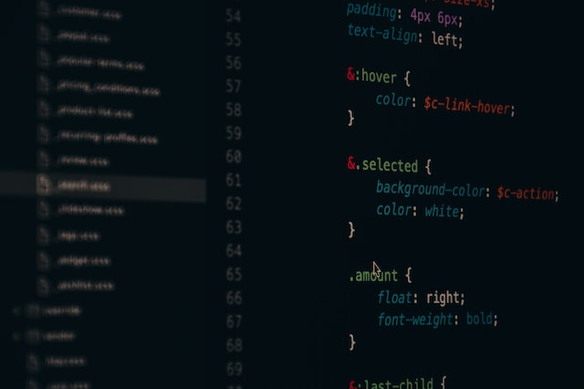

HTML
Se utiliza para definir los elementos y la organización de los contenidos en una página.
JavaScript
Es utilizado para crear interactividad y funcionalidad en las páginas web. Se utiliza para crear efectos visuales, validar formularios, interactuar con bases de datos y mucho más.

CSS
Se encarga de dar estilo y diseño a las páginas web. Se utiliza para definir la apariencia visual de los elementos HTML, incluyendo el color, la fuente, el tamaño y la posición.